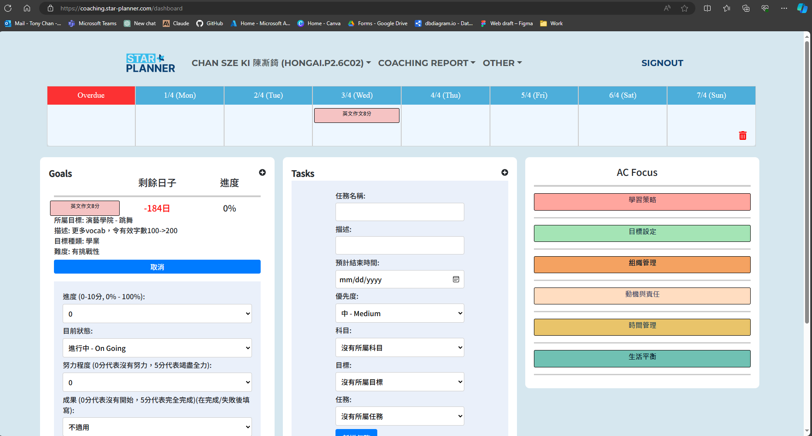
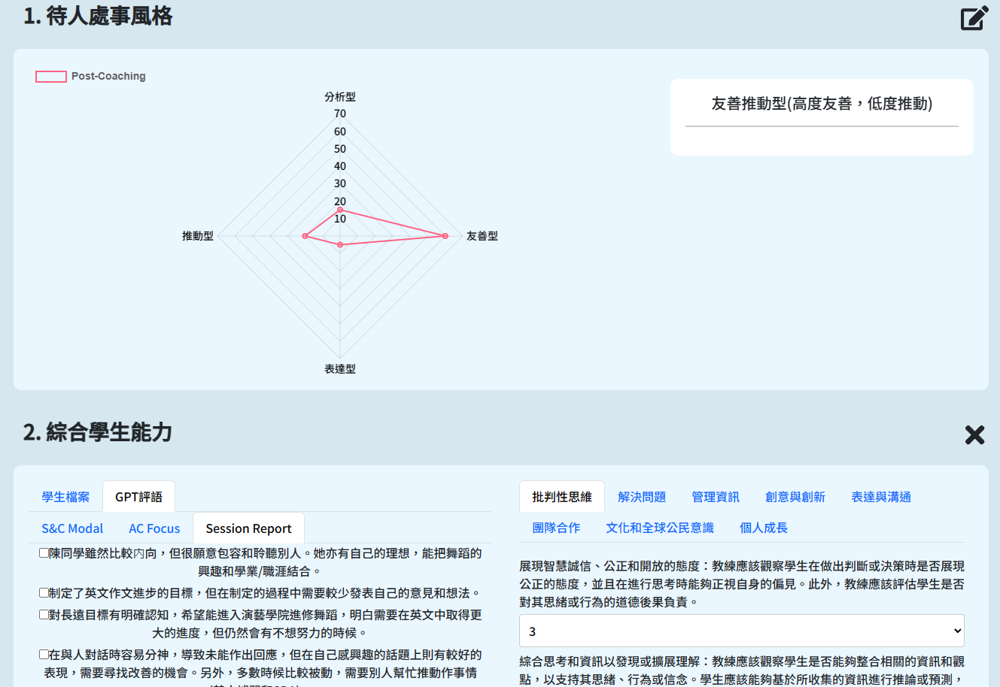
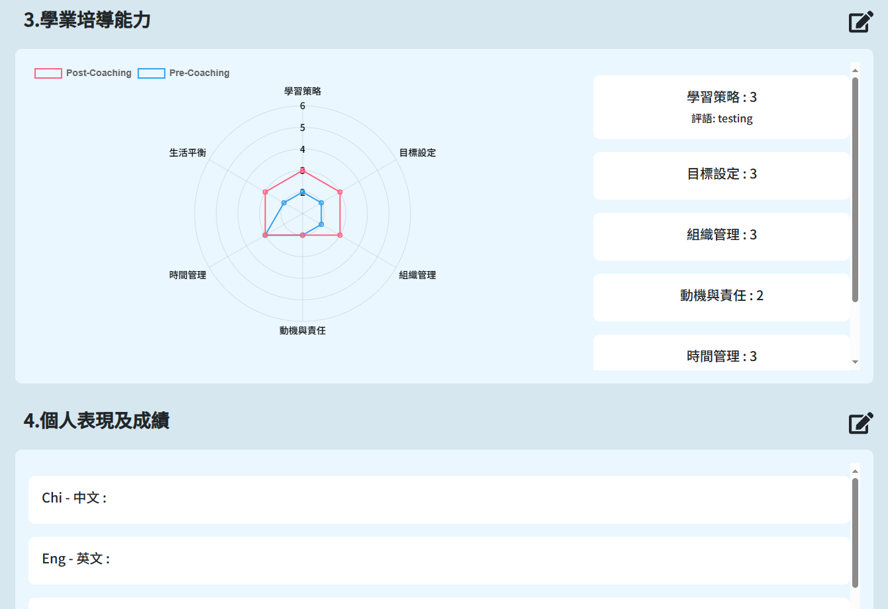
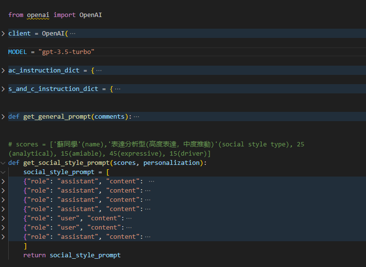

Star Planner
Academic Coaching Web Application • Jun 2023 - Jan 2024
Project Overview
The Star Planner Coaching System is a comprehensive platform designed for Academic Coaching (AC), aimed at supporting the coaching cycle and generating insightful reports for educational stakeholders. It empowers educators and students with tools to enhance engagement and academic success.
Key Features
- Goal Setting & Evaluation - Comprehensive goal tracking system
- Task Setting & Evaluation - Task management with progress monitoring
- Mini-Timetable - Integrated scheduling system
- Session Report Generation - Automated reporting tools
- Comprehensive Reporting - Detailed analytics and insights
Technology Stack
System Usage
The Star Planner Coaching System is designed to seamlessly integrate into educational environments, providing a user-friendly interface for educators and students. The system supports the complete coaching cycle from goal setting to comprehensive reporting, making academic coaching more efficient and data-driven.
Project Screenshots
Dashboard Interface
Comprehensive Reports
 ChatGPT Integration
Project Links & Information
Repository
Find the source code and additional information in the Star Planner GitHub repository:
View on GitHubLicense
This project is proprietary and owned by Star Planner. Unauthorized use, reproduction, or distribution is strictly prohibited.